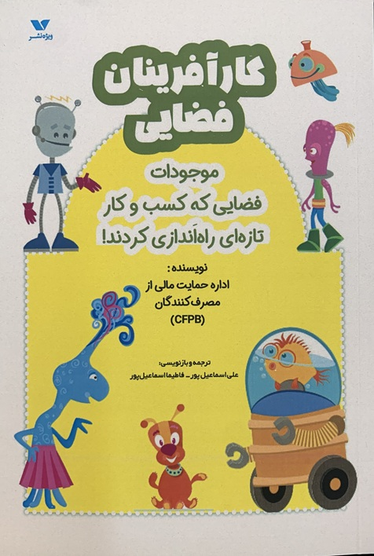
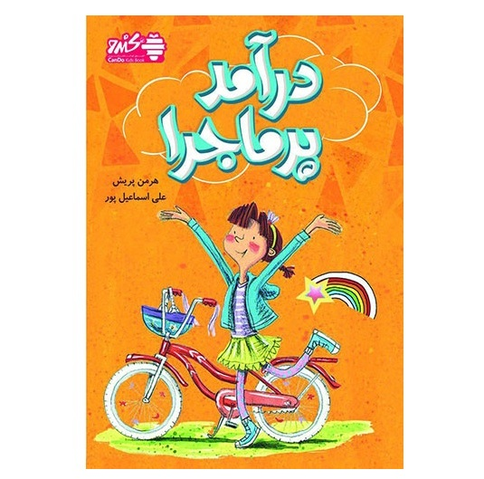
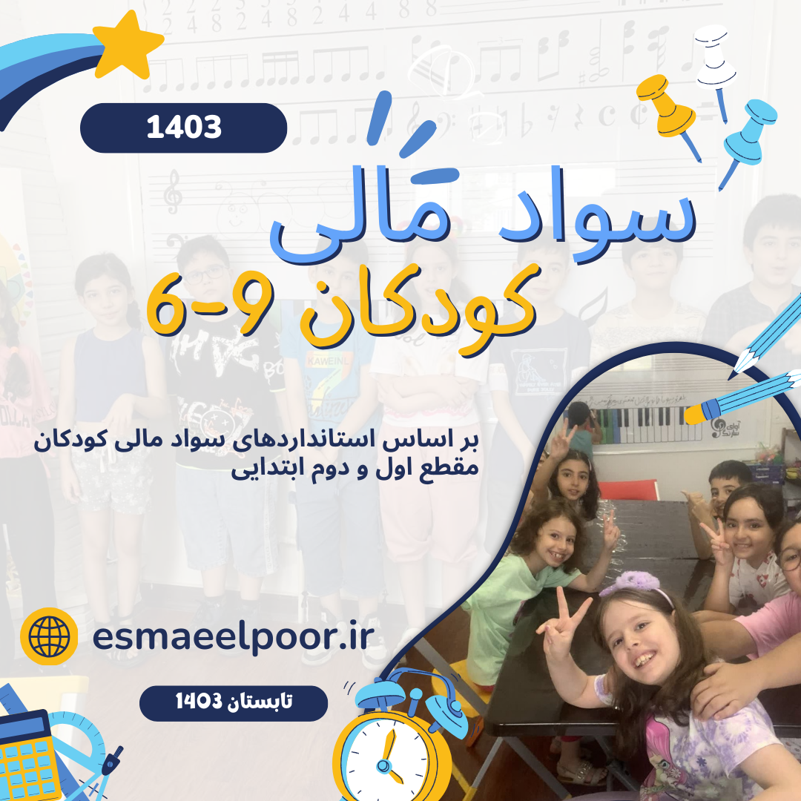
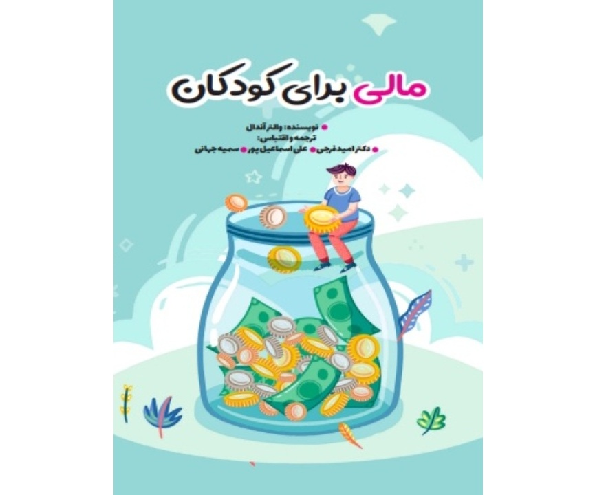
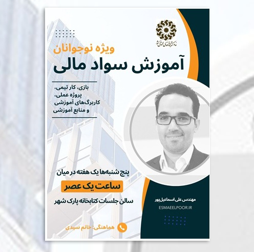
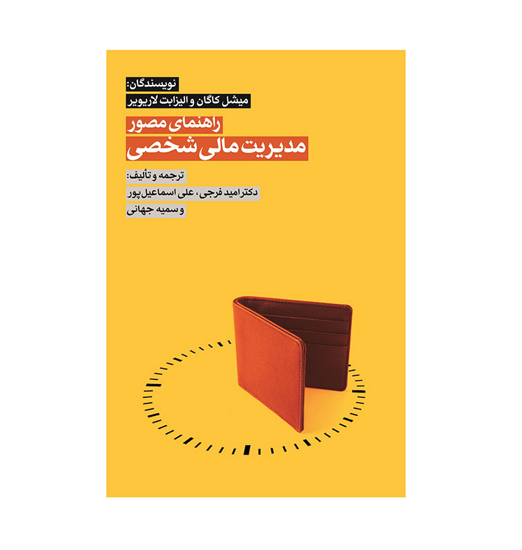

علی اسماعیلپور
سازنده تجربههای دیجیتال در مرز فناوری، داده و یادگیری
از سال ۱۳۷۸ مسیر حرفهای من با تولید نرمافزار و محتوای دیجیتال آغاز شد؛ مسیری که امروز به تحلیل داده، هوش مصنوعی، طراحی محصولات آموزشی، سواد مالی و پژوهش در کسبوکارهای هوشمند رسیده است. این سایت فقط یک رزومه نیست؛ روایت مسیری است که در مرز فناوری، انسان و یادگیری ساختهام.


100+
تجربه

1000+
مشتریان راضی

100+
پروژه موفق

20000+
تیراژ کتابها

درباره علی اسماعیلپور
کارشناس فناوری اطلاعات و کارشناس ارشد سواد مالی
من علی اسماعیلپور هستم، متولد 1359، کارشناس و محقق در زمینه مدیریت، مدیریت مالی شخصی و مدیریت پروژه و نرم افزار با بیش از دو دهه تجربه حرفهای.
به عنوان مدیر مسئول در موسسه رایافرهنگ، به تولید و نشر محتوای علمی و آموزشی متعهد هستم.
در حال حاضر دانشجوی دکتری مدیریت فناوری اطلاعات گرایش کسب و کارهای هوشمند هستم و
تحصیلاتم شامل کارشناسی مهندسی نرم افزار و دو مدرک کارشناسی ارشد در MBA بازار سرمایه و مدیریت اجرایی (استراتژیک) است.
با تکیه بر مهارتهای مدیریت پروژه، نرمافزارهای چندرسانهای و زیرساختهای دیجیتال، دانش من در زمینههای مختلف مدیریتی، از جمله مدیریت مالی و نیروی انسانی، به بهینهسازی فرآیندها و ارتقاء کیفی سازمان شما کمک میکند. اگر به دنبال همکاری یا اطلاعات بیشتر هستید، خوشحال میشوم که در ارتباط باشیم.
DNA حرفهای من
سه مسیر اصلی هویت حرفهای من در این سالها، در نقطه تلاقی فناوری، انسان و نوآوری شکل گرفتهاند. بهجای درصد مهارت، ترجیح میدهم این هویت را با مسیر، خروجی و تجربه نشان دهم.
فناوری و داده
از توسعه نرمافزار، طراحی سامانه و پایگاه داده تا تحلیل داده، هوش مصنوعی، BI و تصمیمگیری دادهمحور؛ این ستون ریشه تاریخی مسیر من در جهان دیجیتال است.
یادگیری و سواد مالی
تبدیل دانش به تجربه؛ از تألیف و ترجمه کتاب تا طراحی بازی، کلاس، محتوای آموزشی و برند FI360 برای آموزش مالی کودکان، نوجوانان و خانوادهها.
نوآوری و محصول
من اغلب پروژهها را فقط اجرا نمیکنم؛ آنها را بهعنوان یک مسیر طراحی میکنم: از ایده و مدل مفهومی تا محصول، MVP، تیم، و فرصتهای جدید برای توسعه کسبوکار.
مسیر ۲۵ ساله من
مزیت من فقط سابقه زیاد نیست؛ عبور از چند موج فناوری و حفظ پیوند میان فناوری، آموزش، محتوا، مدیریت و نوآوری است. این خط زمان، فشردهترین روایت از آن مسیر است.
آغاز مسیر دیجیتال
شروع فعالیت حرفهای با کتابهای الکترونیکی، محتوای دیجیتال و تجربههای اولیه وب و نرمافزار؛ دورهای که بنیان نگاه من به فناوری و محتوا را ساخت.
رسانههای دیجیتال و محصولات چندرسانهای
تولید نرمافزارهای آموزشی و فرهنگی مانند «کولهپشتی» و «قصههای ماندگار»، حضور در جشنوارههای رسانههای دیجیتال و تجربه جدیتر در ساخت محصول.
داده، بازار و تحلیل
ورود جدیتر به تحلیل داده، بازار سرمایه، سامانههای اطلاعاتی و مدلهای تصمیم؛ جایی که مسیر فناوری با تحلیل و داده بهطور عمیقتر گره خورد.
تولد FI360
تبدیل سواد مالی از یک موضوع آموزشی به یک زیستبوم محصولی؛ کتاب، بازی، تجربه یادگیری و آموزش مالی برای کودکان، نوجوانان و خانوادهها.
هوش مصنوعی، کسبوکار هوشمند و آیندهپژوهی
تمرکز فعلی بر استفاده از داده و فناوریهای هوشمند برای تصمیمگیری بهتر، طراحی محصولات جدید، و پژوهشهایی مانند دوقلوی دیجیتال انسان و سیستمهای تصمیمیار.
آنچه ارائه میدهم

مدیریت پروژههای نرمافزاری
سالها تجربه در حوزه نرمافزار، تولید محتوا، نشر، تحلیل داده و پروژههای دیجیتال به من آموخته است که موفقیت فقط به ایده خوب یا فناوری مناسب وابسته نیست؛ بلکه به برنامهریزی دقیق، هماهنگی تیم و تصمیمگیری درست نیاز دارد. در پروژههای مختلف، از طراحی سامانههای نرمافزاری و بانکهای اطلاعاتی تا تولید کتاب، محتوای آموزشی، بازی و محصولات مبتنی بر هوش مصنوعی، مسئولیت برنامهریزی، هدایت تیم و نظارت فنی را بر عهده داشتهام. به شما کمک میکنم نیازهای واقعی پروژه را شناسایی کنید، راهکار مناسب را انتخاب کنید و پروژه را از ایده تا اجرا و تحویل نهایی پیش ببرید؛ با هدف افزایش کیفیت، کاهش هزینه و کنترل ریسک.

دیتاساینس
از سال 1378 با بحث دیتا و بانک اطلاعات آشنا شدم و در همان سال نمودارهای آماری کتابهای منتشرشده در ایران را در کتاب «مرجع 78» منتشر کردم. سالها با داده سروکار داشته ام و چند سالی است که استخراج داده از بانکهای اطلاعات را به هوش مصنوعی سپرده ام. دیتاساینس و ماشین لرنینگ تبدیل به غول چراغ جادوی زندگی من شده است.
تولید محتوا
تا به حال برای سازمانها و ارگانهای مختلف طرحهای پژوهشی، بازاریابی، بیزینس پلنهای متنوعی نوشتهام و در این بین میتوانم به طراحی طرحهای پژوهشی دقیق، نوشتن سناریوهای ویدئویی جذاب و تهیه طرحهای تجاری کارآمد است. هدفم این است که با همکاری شما، محتوایی بسازیم که نه تنها اطلاعات مفیدی ارائه دهد، بلکه به رشد و موفقیت کسبوکار شما نیز کمک کند. بیایید با هم ایدههایمان را به واقعیت تبدیل کنیم!

ترجمه و تألیف
در دنیای کتاب و آموزش فعالیتهای متنوعی داشتهام و تاکنون علاوه بر حدود 10 کتاب ترجمه و تألیفی، در بیش از 300 جلد کتاب به صورت مستقیم یا غیرمستقیم همکاری کردهام. خدمات من شامل ترجمه، تألیف، تصحیح و ویراستاری متون است که با دقت و عشق به کار انجام میشود. همچنین طراحی نمودارهای جذاب و مدیریت فرایند انتشار کتابها را نیز بر عهده دارم تا اطمینان حاصل کنم که هر کتابی با کیفیت بالا و به بهترین شکل ممکن منتشر میشود. بیایید با هم دنیای جدیدی از دانش و خلاقیت را رقم بزنیم!
آیا پروژه ای در ذهن دارید؟
اگر فکر میکنید برای سازمان شما می توانم مفید باشم لطفا با من در ارتباط باشید
پروژههای شاخص به سبک Case Study
بهجای یک فهرست طولانی، این چند نمونه تصویری روشنتر از نوع مسئلهها، نقش من و فناوریهایی هستند که در آنها درگیر بودهام.
i18.ir
- سال: از دهه ۱۳۹۰ تا امروز
- ایده: تحلیل هوشمند بازار سرمایه و صنعتها
- نقش من: طراحی محصول، تحلیل و پیوند با داده
- فناوری: Database + Web + Analytics
FI360
- ایده: یادگیری مالی بهجای آموزش مستقیم
- نقش من: طراحی زیستبوم محصول و محتوا
- خروجی: کتاب، بازی، کارگاه و تجربه تعاملی
- هویت: آموزش مالی برای کودکان و خانوادهها
نقشه جریان دانش
- سال: ۱۳۸۲
- ایده: تحلیل روابط پنهان میان کتابها و ایدهها
- نقش من: معماری مفهومی و طراحی مسیر پروژه
- ارزش: پیوند نشر، داده و نگاه شبکهای
پروژههای فناورانه؛ از ایده تا پیادهسازی

فروش دامنههای اینترنتی


نرم افزار ارتباط با مشتریان آسمان

سمینارهای موفقیت 1 و 2

نرم افزار جامع موفقیت - کوله پشتی

نرم افزار قصه های ماندگار
آزمایشگاه ایدهها
بعضی ایدهها هنوز محصول نهایی نشدهاند، اما دقیقاً همینها مسیر آینده را نشان میدهند. این بخش، اتاق فکر من برای پیوند دادن فناوری، انسان، دانش و نوآوری است.
BioManagement
الهام از طبیعت برای ساخت مدلهای مدیریتی زنده، چابک و هوشمند.
Knowledge Flow
نقشهبرداری از جریان دانش میان کتابها، نویسندگان، ناشران و ایدهها.
FI360 Games
طراحی بازیها و تجربههای یادگیری برای درونیسازی مفاهیم مالی.
Human Digital Twin
پژوهش درباره دوقلوی دیجیتال انسان و پشتیبانی تصمیم با داده و شبیهسازی.
زیستبوم محصولات خلاقانه (آموزش، بازی و کتاب)

فی ۳۶۰| تجربههای یادگیری سواد مالی (1396-تاکنون)
محصولات سواد مالی فی ۳۶۰ شامل مجموعهای از بازیهای آموزشی مانند قهرمانان مالی (FiQ) و کارتآس، کتابهای داستانی و آموزشی سواد مالی، و برنامههای آموزش کارگاهی است که برای گروههای سنی مختلف طراحی شدهاند. هدف فی ۳۶۰ ایجاد نسلی آگاه و توانمند است که بتواند از سالهای نخست زندگی، تصمیمهای مالی بهتر بگیرد و آینده اقتصادی خود را هوشمندانهتر بسازد. مشاهده

مدیریت طبیعی | BioManagement (1405)

کتاب آهسته و پیوسته بخرید (1405)

کارتآس - بازی رومیزی کارت و تاس (1405)

بازی رومیزی قهرمانان مالی - FiQ Heroes (1405)

پزا - بستههای غذایی خشک (1404)

نقشه دانشی کتاب (1382)
هیچ کتابی از صفر شروع نمیشود. پشت هر کتاب، کتابها، آدمها و فکرهایی هستند که روی شکلگیری آن اثر گذاشتهاند.
«نقشه جریان دانش» این ارتباطهای پنهان را پیدا میکند و نشان میدهد:
-یک کتاب از چه کتابهایی الهام گرفته است؛
-کدام نویسندگان روی فکر یکدیگر اثر گذاشتهاند؛
-ناشران در چه مسیرهای فکری حرکت میکنند؛
-و ایدهها چگونه از یک حوزه به حوزه دیگر منتقل میشوند.
این سامانه فقط نمیشمارد که یک کتاب چند بار مورد استفاده قرار گرفته؛ بلکه داستان حرکت دانش را نشان میدهد؛ اینکه فکرها از کجا آمدهاند، چگونه تغییر کردهاند و به کجا رسیدهاند.
پایه اولیه این ایده و نمونه عملی آن در سال ۲۰۰۳ در مؤسسه پارسا و با راهبری جناب دکتر محمد سمیعی ایجاد شد؛ پروژهای زودهنگام که با وجود اجرای اولیه، تاکنون به ظرفیت کامل خود نرسیده است. مشاهده

انگشتر چند گوهر (1405)

کتاب کارآفرینان فضایی (1403)

کتاب درآمد پرماجرا در سایت هدهد

آموزش سواد مالی ویژه کودکان 6 تا 9 سال

کتاب مالی برای کودکان

آموزش سواد مالی ویژه نوجوانان

مجموعه ویدئویی جهش کوانتومی

کتاب راهنمای تصویری مدیریت مالی شخصی

کتابهای کودک و نوجوان
مقالات

بررسی صنعت بانک در ایران - 1393

گروه مباحثاتی چندرسانهای - 1382

سفر آرمان در سرزمین دانش - 1405
گواهینامهها و افتخارات
لوح تقدیر
برای نرمافزار جامع موفقیت

دومین جشنواره ملی رسانههای دیجیتال
وزارت فرهنگ و ارشاد اسلامی
لوح افتخار
برای جستجوگر سایتهای قرآنی
سومین جشنواره بینالمللی رسانههای دیجیتال
وزارت فرهنگ و ارشاد اسلامی
عنوان افتخاری
چهره برتر

نخستین جشنواره چهرههای برتر فناوری اطلاعات و ارتباطات استان قم
استانداری قم
ثبت اختراع
اختراع دستگاه «آرشيو هوشمند لوح فشرده يا كيف دی وی دی هوشمند (Smart DVD Pack)»
اختراع دستگاه «دارو افزار(يادآور هوشمند زمان مصرف دارو)»

اداره ثبت مالکیتهای صنعتی
جمهوری اسلامی ایران
لوح تقدیر
برای طرح برگزیده نوآوری
استانداری استان قم
استاندار قم
عضو کانون اهل قلم
با بیش از 17 کتاب در نقش های مؤلف، مترجم، مصحح و ویراستار

مؤسسه خانه کتاب و ادبیات ایران
معاونت فرهنگی وزارت فرهنگ و ارشاد اسلامی
عضو صندوق اعتباری هنر
در رده نویسندگان

وزارت فرهنگ و ارشاد اسلامی
دارای پروانه فنی مهندسی
و همچنین جواز تأسيس واحد فني و مهندسي

وزارت صنعت ، معدن و تجارت
عضو انجمن انفورماتیک ایران

وزارت علوم تحقیقات و فناوری
گواهینامه
اصول بازار سرمایه - 1403

سازمان بورس و اوراق بهادار
ICMC - گواهینامههای حرفه ای بازار سرمایه
گواهینامه
کارشناسی عرضه و پذیرش - 1400
سازمان بورس و اوراق بهادار
ICMC - گواهینامههای حرفه ای بازار سرمایه
گواهینامه
تحلیلگری بازار سرمایه - 1400
سازمان بورس و اوراق بهادار
ICMC - گواهینامههای حرفه ای بازار سرمایه
گواهینامه
مدیریت نهادهای بازار سرمایه - 1400
سازمان بورس و اوراق بهادار
ICMC - گواهینامههای حرفه ای بازار سرمایه
گواهینامه
بیوانفورماتیک - تحلیل داده های زیستی - 1403

مکتبخونه
دکتر علی شریفی زارچی
گواهینامه
مربیگری و تدریس در حوزه سواد مالی - 1403

خانه خلاق و نوآوری ترمه دانشگاه تهران
باشگاه مهارت آموزی کودک کارن
Course Certificate
Personal & Family Financial Planning - 2020

Coursera
UF - University of Florida
International Seminar
Management Accounting & Business Analytics - 2024

CMA - Regional Director of ICMA Australia & New Zeland
MaliSara
Certificate of Participation
Machine Learning Course - 2023

IMT College
Mohammadreza Momeni
گواهینامه پایان دوره
دوره آموزشی جامع معامله گری طلا

مکتبخونه
محمدصادق میرزایی
دنبال علی اسماعیلپور دیگری هستید؟
برای جلوگیری از اشتباه در شناسایی و تفکیک هویت حرفهای افراد همنام، صفحهای جداگانه ساختهام تا هر «علی اسماعیلپور» با سابقه مستقل خودش معرفی شود.